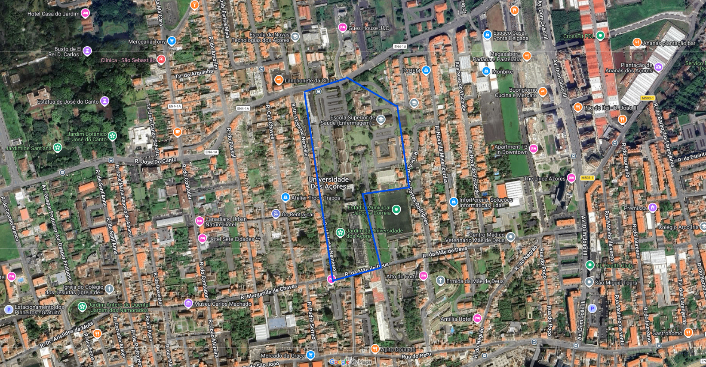

BEM VINDO AO CENTRO ACADÉMICO CLÍNICO DOS AÇORES
Inovação,saúde e conhecimento no coração do atlântico


Inovação,saúde e conhecimento no coração do atlântico
A nossa missão é unir o conhecimento científico, o ensino de vanguarda e a prática clínica de excelência num ecossistema único. No CAC-Açores, trabalhamos para que a investigação não fique no papel, mas chegue rapidamente à cama do doente. Ao integrar profissionais, estudantes e investigadores, garantimos que cada ilha beneficie de cuidados de saúde modernos, humanizados e sustentados na melhor evidência científica global.
Existimos para transformar os desafios da insularidade em oportunidades de inovação. A missão do CAC-Açores é posicionar a região como um laboratório vivo de investigação biomédica e translacional. Através da cooperação nacional e internacional, promovemos a formação avançada dos nossos profissionais e o desenvolvimento de soluções tecnológicas que anulem as distâncias, assegurando que o acesso à saúde de ponta seja uma realidade para todos os açorianos.
A missão do CAC-Açores é ser o motor de desenvolvimento do capital humano na saúde da Região Autónoma. Focamo-nos em criar um ambiente de aprendizagem contínua e investigação de alto impacto que atraia e retenha talento nas ilhas. Ao elevar o padrão do ensino clínico e da investigação em saúde, estamos a construir um futuro onde a prevenção e o tratamento de excelência são o alicerce de uma comunidade açoriana mais resiliente e saudável.
Atividade Clínica
Distribuição de Áreas de Investigação
Esta área foca-se em transformar a descoberta científica em tratamentos práticos. Nos Açores, isto ganha uma relevância especial em áreas como a genética (devido ao isolamento populacional), doenças raras ou o impacto do ambiente e estilo de vida na saúde dos ilhéus. O objetivo é que o que se estuda no laboratório beneficie diretamente o doente no hospital ou centro de saúde.
O Centro atua como um polo de valorização dos profissionais de saúde (médicos, enfermeiros, técnicos). Isto inclui a criação de programas de doutoramento, mestrados especializados e formação contínua em técnicas avançadas. É a ferramenta principal para atrair e fixar talento na região, garantindo que os profissionais não precisam de sair das ilhas para estarem na vanguarda do conhecimento.
Dada a dispersão geográfica das 9 ilhas, o CAC-Açores deve atuar na implementação de novas tecnologias e soluções digitais. Isto envolve o desenvolvimento de projetos de inteligência artificial aplicada ao diagnóstico, monitorização remota de doentes e a otimização da telemedicina para garantir que a distância não é um entrave à excelência dos cuidados especializados.
É o parceiro académico por excelência. É através da UAc (especialmente a Faculdade de Ciências da Saúde) que se garante a base do ensino, a certificação de cursos e a ligação aos investigadores de base.
Nomeadamente o Hospital do Divino Espírito Santo (Ponta Delgada), o Hospital de Santo Espírito (Angra do Heroísmo) e o Hospital da Horta. São estes que fornecem o "terreno" clínico, os doentes e os casos de estudo para a investigação.
O parceiro institucional e governativo. É essencial para alinhar a estratégia do Centro Académico com as políticas públicas de saúde da Região Autónoma e garantir o financiamento e a logística necessária.
Como os Açores beneficiam de parcerias com o continente, um parceiro de investigação de elite (como o i3S da Universidade do Porto ou o IMM em Lisboa) ajuda a elevar os padrões científicos e permite o intercâmbio de investigadores.
Um parceiro tecnológico fundamental para a área da inovação e digitalização. O Nonagon pode ajudar o CAC-Açores a desenvolver as soluções de telemedicina e as startups de saúde digital que as ilhas tanto precisam.
Não podemos focar apenas nos hospitais. As Unidades de Saúde de Ilha representam os cuidados de saúde primários. Ter estas unidades como parceiras garante que a investigação e o ensino cheguem à medicina familiar e à proximidade com o cidadão em todas as 9 ilhas.
Avenida D. Manuel I, Matriz
9500-370 Ponta Delgada, São Miguel
Açores, Portugal
+351 296 000 000
geral@cac-acores.pt
Segunda a Sexta: 08h - 20h

Investigação ativa em todas as ilhas.
Ligação direta aos melhores centros da UE.
O CACA não é apenas um centro, é o motor da evolução clínica nos Açores, garantindo que a ciência de ponta chega a cada cidadão.